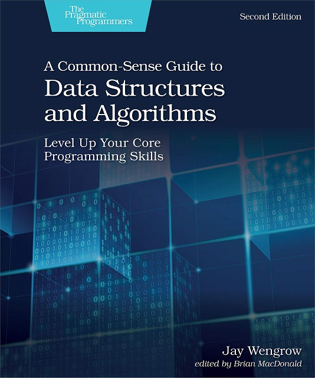

Course Description
This honors course provides advanced students with continued experience using Java to deepen their software development skills. The course examines the design, implementation, and analysis of data structures including stacks, queues, linked lists, binary trees, heaps, hash tables, and graphs, as well as algorithms for searching and sorting. Students are also introduced to relational databases and the fundamentals of event-driven programming and graphical user interface development. This college-level course gives students a head start in computer science and engineering by covering material typically taught in introductory college-level data structures courses. In addition to technical knowledge, students strengthen analytical and problem-solving skills applicable to fields such as data science, engineering, economics, and research.
Learning Resources
Textbook

Level Up Your Core Programming Skills
(Wengrow)
Office Hours and Open Lab
You can usually find me in the lab (816) or downstairs (811/812/813).
- Before school (M-F): 816
- Before lunch (T/Th/F): 816
- Lunch (M-F): 816
- 7th period (M/T/W): 816
- And by appointment
Grading and Assessments
This course will use a range of assessments. These include written assessments and labs that all are designed to measure understanding and a student’s ability to apply their knowledge.
Learning Goals
- Conceptual Understanding (40%)
- Ability to demonstrate knowledge of course concepts
- Technical Application (50%)
- Ability to problem solve
- Ability to write Java code
- Communication (10%)
- Ability to communicate technical concepts
- Ability to write readable code